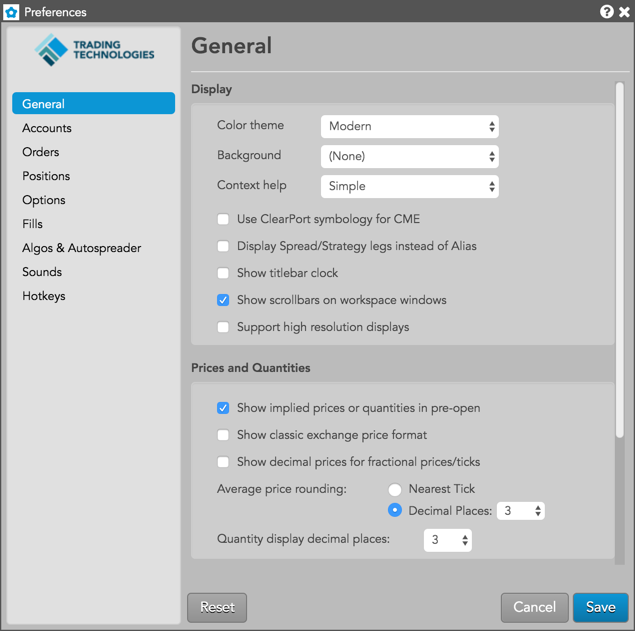

Click each preference in the Display section to see a list of options.
| Preference | Description |
|---|---|
| Color Theme | Sets the color theme for each widget you open in your workspaces. |
| Background | Sets the background theme and color for your workspaces. |
| Context help | Enables tooltips for widgets. Select one of the following options:
|
| Use ClearPort symbology for CME |
Sets the Trade application to display contract names recognized by CME ClearPort. Some ClearPort contract names use symbology that is different than what is used in CME Globex. For example, Natural Gas options (European) are listed as "LN" in Clearport, but listed as "LNE" in Globex. Check this option to enable the display of contract names using ClearPort symbology. When unchecked, contract names are displayed using CME Globex symbology. This option is unchecked by default. Note: Reload your workspace after changing this preference to apply the change. To reload, select File | Refresh in the workspace title bar. |
| Display Spread/Stratgy legs instead of Alias | Sets whether to display the commonly used alias name, or to display all legs of the instrument, including expiries, strikes, and quantities of individual legs. |
| Show titlebar clock | Sets whether to show the clock in the workspace menu bar. |
| Show scrollbars on workspaces | Shows/hides workspace window scroll bars. When this preference is checked (enabled), scroll bars are visible within the workspace. When this preference is unchecked (disabled), scroll bars are not visible and widgets will automatically move to remain visible within the workspace if you resize the workspace window to make it smaller. This preference is checked by default and scroll bars are visible. |
| Support high resolution displays | Sets whether to improve text display in grid-based widgets for very high-resolution monitors or displays, such as a MacBook Retina display. Note that the preference has no affect on other types of displays. |
| Preference | Description |
|---|---|
| Display spread/strategy positions | Sets whether to display positions in exchange-listed spreads in addition to the positions of the spread legs. Note: To display the spread position as a spread SOD, the Create SOD records for Spread/Strategy Positions preference on your account must be enabled in the Setup application. |
| Show classic exchange price format | Displays prices similar to how they are displayed in X_TRADER®. |
| Show decimal prices for fractional prices/ticks | Shows prices as decimals for instruments with fractional ticking and apostrophe price display. Note: If you change this setting, you must reload the workspace to see the changed display. |
| Show implied prices or quantities in pre-open | Sets whether to display implied prices and quantities when a contract is in a pre-open state. |
| Average price rounding |
Sets the rounding precision when displaying average fill prices. Select one of the following:
|
| Quantity display decimal places | Sets the preferred number of decimal digits to show for fractional quantities. Click the selector to choose 0-8 decimal digits to display. If additional quantity is available, a "+" is shown to indicate the extra digits (e.g., 1.005+). The default value is "3" decimal places. |
| Preference | Description |
|---|---|
| Contracts | Represents trading quantities for energy products as the entire delivery amount. |
| Flow | Represents trading quantities for energy products as the amount to be delivered in each delivery period. |
| Preference | Description |
|---|---|
| Cache instrument data locally | Sets whether to cache the instrument information downloaded when starting the Trade application. The setting is enabled by default to reduce bandwidth and improve performance, as most instrument definitions do not change frequently. Note: You can update an instrument definition manually, if needed, from the MD Trader or Spread Matrix context menus. |